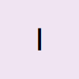
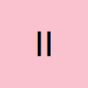
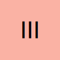
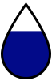
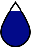
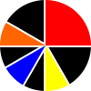
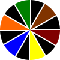

Tu piel importa. No es lo mismo tatuar que borrar. Marca cómo reacciona tu piel al sol ☀️

Siempre se quema & nunca se broncea
1 puntos

Se quema fácil & se broncea muy poco
2 puntos

A veces se quema & se broncea lento
3 puntos
Se quema poquito & normalmente se broncea
4 puntos
Rara vez se quema & se broncea bien
5 puntos
Nunca se quema & siempre se broncea
6 puntos
¿Dónde está? No todos los lugares del cuerpo se eliminan igual.
Cabeza / cuello / cara
1 punto
Tronco superior / hombros
2 puntos
Tronco inferior / piernas superior
3 puntos
Brazos inferior / pierna
4 puntos
Muñecas / mano / tobillo / pie
5 puntos
¿Es un tatuaje ligero o una pieza sólida?
Muy poca tinta
1 punto
Poca tinta
2 puntos

Tinta moderada
3 pountos

Bastante tinta
4 puntos
¿Es un cover up? ¿Un retoque? ¿Una historia sobre otra?.
No, una sesión
0 puntos
Si, varios retoques/ un cover
2 puntos
Cicatriz & textura en la piel
Sin cicatriz
0 puntos
Poquita cicatriz
1 punto
Cicatriz moderada
3 puntos
Bastante cicatriz
5 puntos
Colores
Solo negro
1 punto
Negro con rojo
2 puntos

Negro & rojo y otros colores
3 puntos

Varios colores
4 puntos